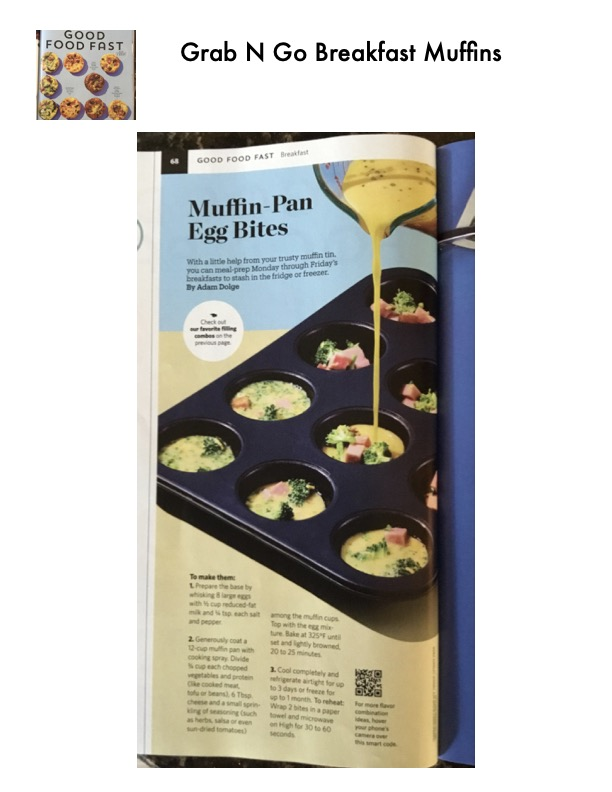

Muffin-Pan Egg Bites

Original cookbook page 60
With a little help from your trusty muffin tin, you can meal-prep Monday through Friday's breakfasts to stash in the fridge or freezer.
Cook: 20 to 25 minutes
Ingredients
- 8 large eggs
- ½ cup reduced-fat milk
- ¼ tsp. salt
- ¼ tsp. pepper
- ¾ cup chopped vegetables
- ¾ cup protein (like cooked meat, tofu or beans)
- 6 Tbsp. cheese
- Small sprinkling of seasoning (such as herbs, salsa or sun-dried tomatoes)
- Cooking spray
Instructions
- Prepare the base by whisking 8 large eggs with ½ cup reduced-fat milk and ¼ tsp. each salt and pepper.
- Generously coat a 12-cup muffin pan with cooking spray. Divide ¾ cup each chopped vegetables and protein (like cooked meat, tofu or beans), 6 Tbsp. cheese and a small sprinkling of seasoning (such as herbs, salsa or even sun-dried tomatoes) among the muffin cups. Top with the egg mixture. Bake at 325°F until set and lightly browned, 20 to 25 minutes.
- Cool completely and refrigerate airtight for up to 3 days or freeze for up to 1 month. To reheat: Wrap 2 bites in a paper towel and microwave on High for 30 to 60 seconds.
Recipe #60 from collection